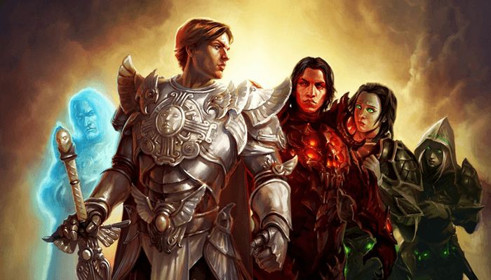

¿Que Son Los Juegos De Rol?
Un videojuego de rol, en ocasiones también designado mediante las siglas RPG (del inglés role-playing game, literalmente «juego de rol») es un género de videojuegos que usa elementos de los juegos de rol tradicionales (pero estos últimos no son juegos electrónicos, se juega a ellos con dados, lápices y hojas de papel). Los jugadores de esta clase de videojuegos usan de hecho muy habitualmente, para sus videojuegos de rol, el término tradicional de «juego de rol», a pesar de la confusión que ello puede ocasionar.
Su jugabilidad
Unos de los principales atractivos que persiguen los aficionados a esta clase de videojuego, se aprecian precisamente en la jugabilidad del combate de tipo medieval cada vez más complejo y realista en ciertos aspectos, como en los movimientos y rasgos humanos más naturales en general, los bienes virtuales que se poseen (en especial armas y efectos de guerra encantados o mágicos, que facilitan el juego notablemente, o que simplemente, se presumen), el detalle en las estadísticas que arroja la aventura y los reconocimientos al tiempo invertido en el videojuego (niveles de las habilidades alcanzados, que define la respetabilidad del jugador ante los otros aficionados). La duración de un sólo juego de éstos demanda mucho tiempo; puede variar mucho para su terminación o fin por parte del usuario promedio. Si se juega a un ritmo sano y detallista, no es raro observar un periodo de varios meses e inclusive más de un año (dependerá de la veneración que le dedique cada jugador a determinado videojuego y si lo abandona por periodos). El juego puede mezclarse con otro género como rol y aventura.
(Haga Click Aqui Para Ver La Historia De Los Videojuegos)
